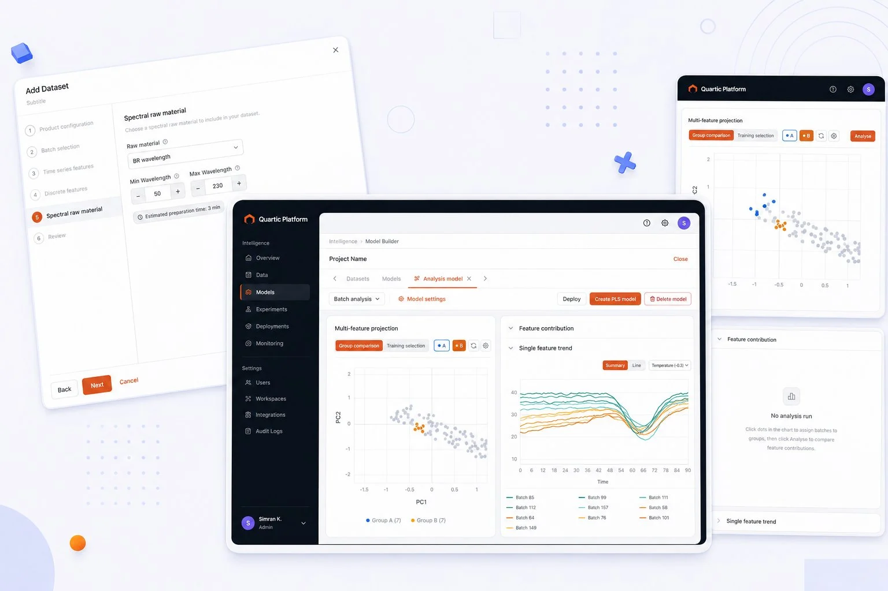
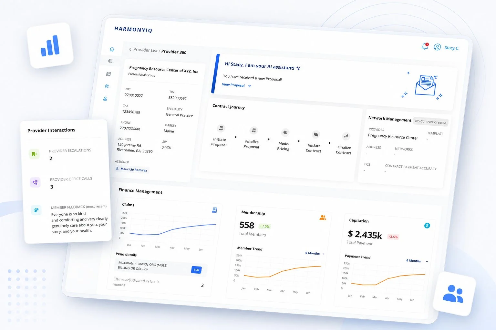
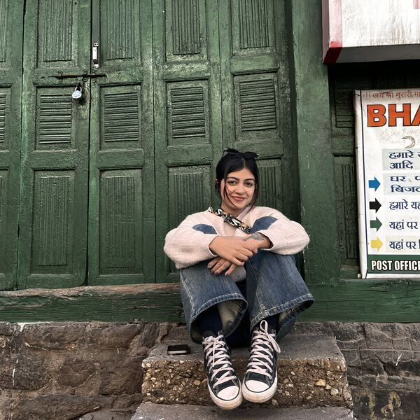
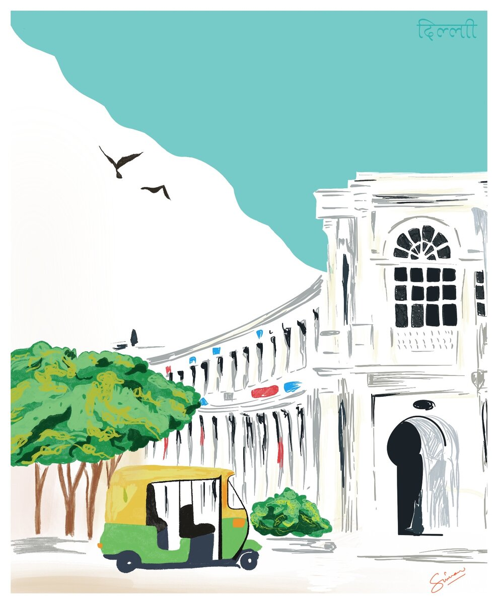
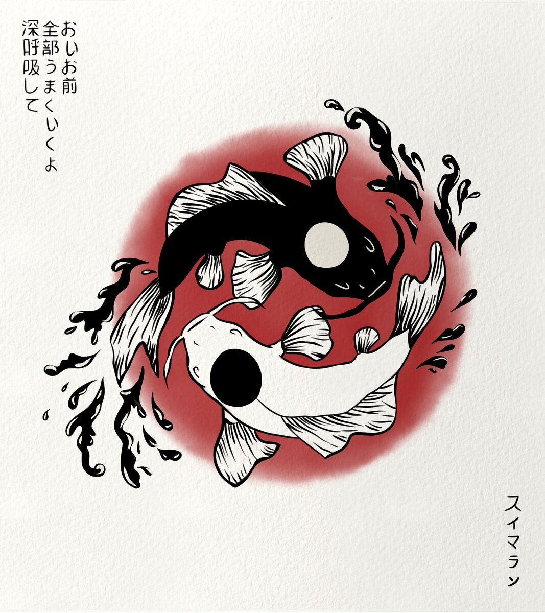
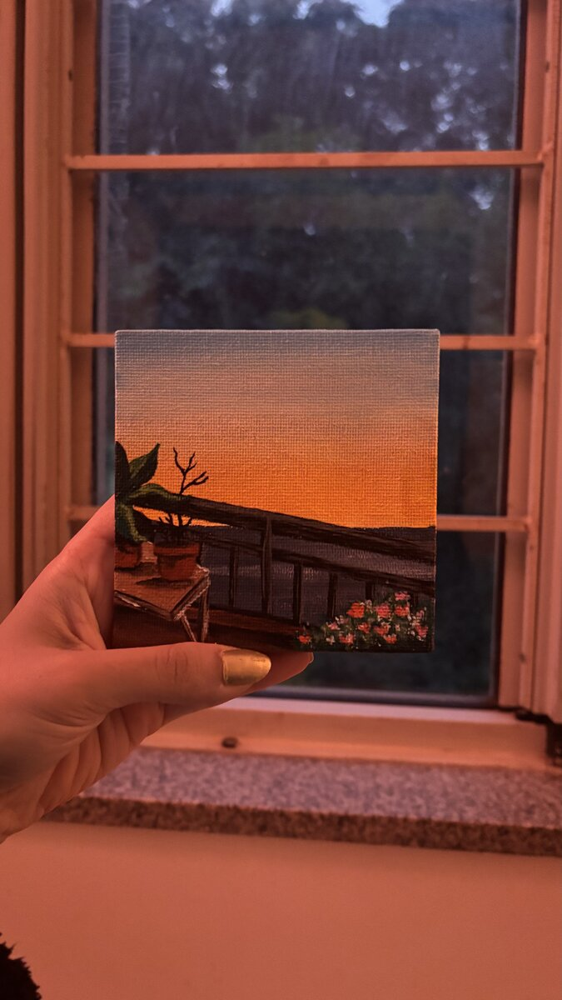
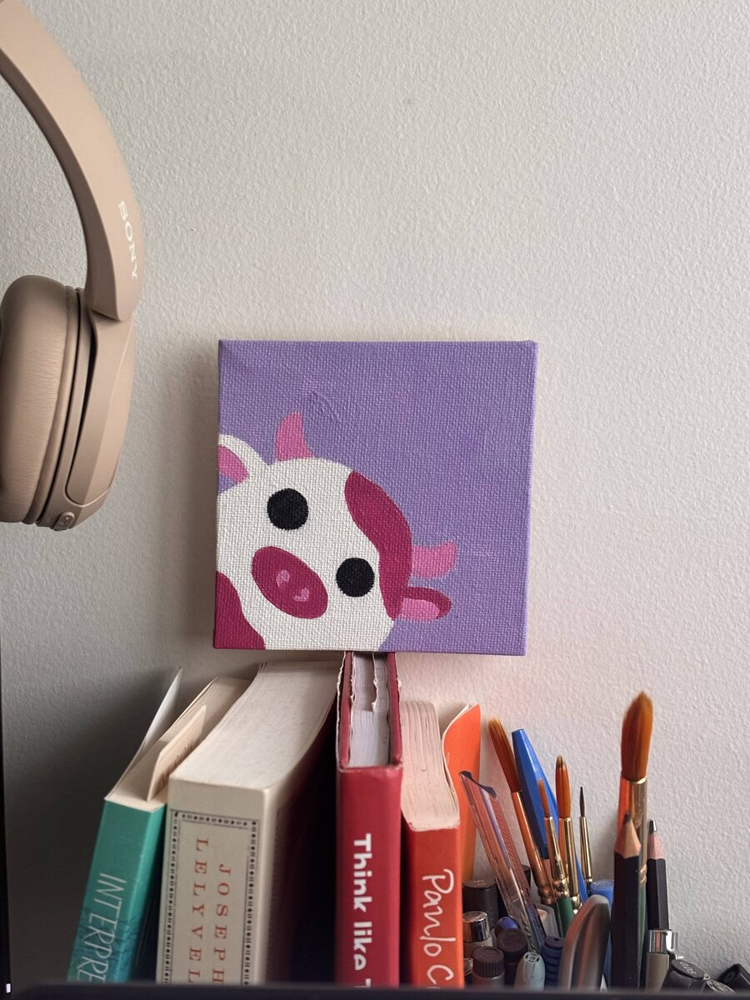
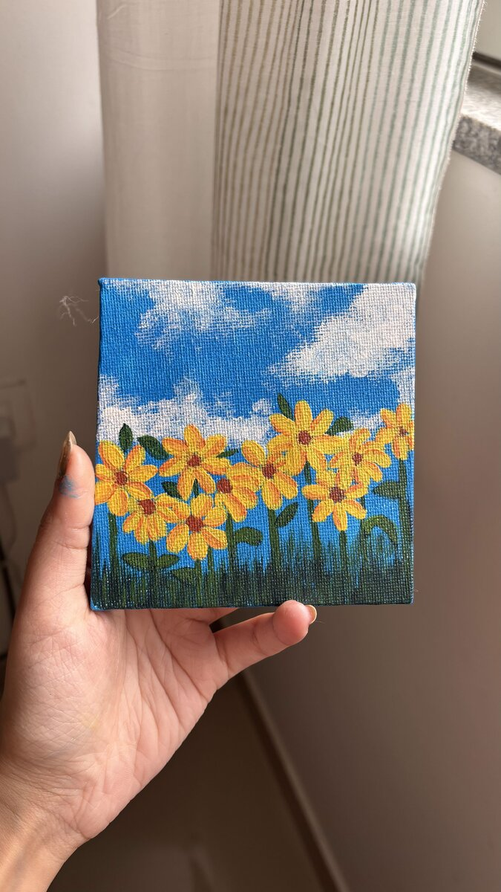
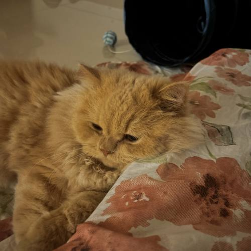
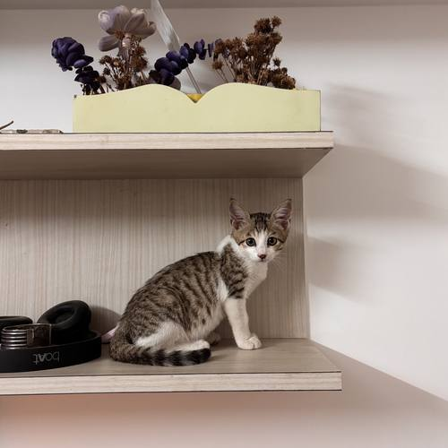

Simran Verma.
Over the past four years, I've shipped 12+ products to production — AI analytics tools used by 50K+ people on factory floors, a design system built from scratch at Quartic.ai, and a fintech product I took from zero to 5,000 users as the founding designer at a YC startup.
The problems I find most interesting are the ones where the domain is technical, the users didn't sign up for it, and good design isn't obvious until it's done.
This portfolio is the work, the thinking, and how it got made.
Quartic.ai
Fintech · Health-tech
Career so far.
Intern to Product Designer II in four years, across four companies.
Selected case studies.
Five products across four domains — shipped, in production.





How I actually work.
Five habits that show up in every project.
Beyond the screen.
The making, the travelling, and the two cats.


Selected work.
The person behind the pixels.

I make hard things feel obvious.
Design found me before I had a name for it — I was always the one rearranging things to make more sense, explaining things nobody asked me to explain, asking why before how. Years later, that same instinct moved into Figma.
I've spent four years in the places where design is actually difficult: factory AI for operators who've never touched a dashboard, healthcare tools for teams drowning in bad software, payments for people who just want to split the bill without the awkwardness.
I ask that at least once a meeting; people have started to expect it. Outside work I'm dancing most evenings, making things with my hands, or watching my two cats judge a decision I spent six hours defending. I'm specific about most things. This portfolio is one of them.











worth using.
Product design — 0→1, design systems, and the genuinely hard problems. I ask why before I open Figma, and I stay until it ships right.
Let's work together.
I'm looking for founding, lead, or senior IC design roles — ideally on complex products where design has real stakes. If that sounds like your team, I'd love to hear from you.
right role.
Email is the best way to reach me — I read everything and usually reply within a day or two.
simranvermaa9@gmail.com →What I bring to a team.
Four years of shipping in production, across four domains.